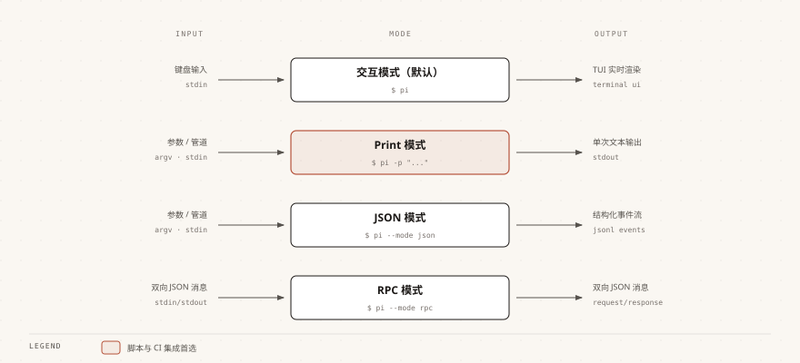

Pi Agent 非対話モード
対話形式の会話に加えて、Pi Agent はスクリプト統合、自動化プロセス、プログラム間通信に適した3つの非対話モードを提供しています。
Print モード（-p）
Print モードは最もよく使われる非対話モードで、1回限りの質問応答を実行した後、結果を出力して終了します。
基本的な使い方
最もシンプルな形式は、-p の後に質問文を直接続けるだけで、AI が回答し終えると終了します。
$ pi -p "帮我总结一下这个项目的结构" 这是一个 TypeScript + Vite 项目，源码集中在 src/ 目录下。 入口文件是 src/main.ts，工具函数位于 src/utils/，共 18 个模块。
@ でファイルを参照し、AI に指定したファイルの内容を読み取らせます：
$ pi -p @README.md "这段文档的主要内容是什么" 这份 README 介绍了安装步骤、环境变量配置和三条常用命令。
パイプでコマンドの出力を直接 AI に渡します。ログやドキュメントなどのテキスト処理に適しています：
$ cat README.md | pi -p "用三句话总结这段文字" 1. 项目要求 Node 20 以上版本。 2. 安装依赖后先把 .env.example 复制为 .env。 3. 日常调试用 npm run dev，发布构建用 npm run build。
@ は画像も参照できます。AI に画像の内容を分析させます：
$ pi -p @screenshot.png "图片中显示的错误信息是什么" 截图中的报错是 Module not found: Can't resolve './utils/format'， 说明 src/index.ts 里的相对路径拼写有误。
--name でセッションに名前を付けます。後で対話モードでこの流れを引き継いで質問を続けられます：
$ pi --name "快速审查" -p "审查 src/ 目录下的代码质量" 代码整体质量良好，有 3 处可以改进： 1. src/api/user.ts 缺少对分页参数的校验。 2. src/utils/format.ts 的日期格式化未处理时区。 3. src/db/query.ts 的裸抛异常建议补充错误码。
モデルの指定
--provider と --model でモデルを指定します。また、両者を組み合わせて provider/model 形式で記述することもできます。
$ pi --provider openai --model gpt-4o -p "帮我重构这段代码的逻辑" 重构建议：把 src/service/order.ts 中 120 行的 createOrder 拆成 校验参数、计算金额、落库三个函数，并为每个函数补充单元测试。
次の組み合わせ表記は上記と完全に同等で、より短く記述できます：
$ pi --model openai/gpt-4o -p "帮我重构这段代码的逻辑"
モデル名の後にコロンと推論レベルを付けると、この呼び出しの思考の深さを制御できます：
$ pi --model sonnet:high -p "这个复杂的算法有什么潜在问题" 主要风险有三点：递归深度没有上限会导致栈溢出； 缓存键未包含用户身份，存在越权读取的可能； 批量写入缺少事务包裹，失败时会出现半提交状态。
--model の:thinkingサフィックス（例: sonnet:high）と--thinkingパラメータの両方で推論レベルを設定できます。
どちらか一方に統一することをお勧めします。2箇所の記述が一致しない場合のトラブルシューティングが困難になるのを防ぐためです。
--models で利用可能なモデルの範囲を制限します。複数のモデルはカンマで区切ります：
$ pi --models "claude-*,gpt-4o" -p "审查代码" 审查完成：共发现 2 个阻塞问题和 5 个改进建议， 详细列表已按严重程度排序。
ツール制御
コマンドライン引数で AI が使用できるツールを制御することは、非対話モードをスクリプト内で安全に実行させるための鍵です。
Pi Agent は非 Windows プラットフォームで7つのツールを内蔵しています：read、write、edit、bash、grep、find、ls。
Windows では bash は powershell に置き換えられます。
--tools でホワイトリストを作成し、指定したツールのみを有効にします。例えば、ファイルを一切変更しない読み取り専用モード：
$ pi --tools read,grep,find,ls -p "审查代码不修改" 审查结果：共 4 个问题，其中 1 个涉及并发写入， 完整报告已输出到终端，本次未修改任何文件。
--exclude-tools で指定したツールを除外します：
$ pi --exclude-tools bash -p "分析代码但不执行命令" 分析结论：该模块的性能瓶颈在循环内的重复文件读取， 建议把目录列表提到循环外，预计可减少 80% 的 I/O。
--no-builtin-tools で全ての内蔵ツールを無効にします。AI は会話内容に基づいてのみ回答でき、拡張ツールとカスタムツールは引き続き利用可能です：
$ pi --no-builtin-tools -p "纯问答" Quicksort 的平均时间复杂度是 O(n log n)， 最坏情况是 O(n^2)，出现在已排序数组上选取首元素为主元时。
拡張ツールやカスタムツールも一緒に無効化する必要がある場合は、--no-tools を使用します。
JSON モード（--mode json）
JSON モードはすべてのイベントを JSON Lines（JSONL）形式で出力し、プログラムでの解析・処理に適しています。
$ pi --mode json "总结项目结构"
{"type":"session","version":3,"id":"019f8c2e-7a41-7b3d-9e5f-2c6a1d84b0e7","timestamp":"2026-08-31T02-40-11-000Z","cwd":"/Users/runoob/projects/runoob-demo"}
{"type":"agent_start"}
{"type":"turn_start"}
{"type":"message_start","message":{...}}
{"type":"message_update","usage":{...},"assistantMessageEvent":{...}}
{"type":"message_end","message":{...}}
{"type":"turn_end","message":{...},"toolResults":[]}
{"type":"agent_end","messages":[...]}
先頭行はセッションのメタデータヘッダーで、フォーマットバージョン、セッション ID、タイムスタンプ、作業ディレクトリを記録します。
以降の各行は独立した JSON イベントで、イベントタイプと対応するデータを含みます。
このモードは以下のようなシーンに適しています：
| シーン | 説明 |
|---|---|
| データ処理パイプライン | イベントストリームを後処理スクリプトに接続し、1行ずつ解析して加工する |
| 行動監視・分析 | AI の毎回のツール呼び出しと意思決定プロセスを記録・分析する |
| カスタムツールチェーン | イベントストリームの上に独自の自動化ワークフローを構築する |
RPC モード（--mode rpc）
RPC モードは stdin/stdout の JSONL プロトコルを通じてプロセス間通信を実現します。
別のプログラムが標準入力からコマンドを送信し、標準出力から応答を読み取ることができます。
RPC モードは拡張 UI プロトコルをサポートしており、リモートクライアントが confirm ダイアログや選択リストなどの対話要素を表示できます。
このモードは以下のようなシーンに適しています：
| シーン | 説明 |
|---|---|
| エディタプラグイン | VS Code などのエディタ拡張機能に Pi Agent を統合する |
| カスタムフロントエンド | RPC プロトコルに基づいて独自の Pi Agent インターフェースを構築する |
| バックグラウンドサービス | Pi Agent を子プロセスとしてより大きなシステムに組み込む |
RPC モードと JSON モードは、開発者向けの高度な機能です。
初心者であれば、おそらく対話モードと Print モードだけで十分です。
Pi Agent をツールチェーンに統合する必要が出てきたときに、改めてこの2つのモードを詳しく学ぶとよいでしょう。
モード比較
3つの非対話モードの違いは主にインタラクティブ性と出力形式に表れます。下表に従って選択してください。

| モード | コマンド | インタラクティブ性 | 出力形式 | 適用シーン |
|---|---|---|---|---|
| 対話モード | pi（デフォルト） | リアルタイム対話 | ターミナル TUI レンダリング | 日常開発、対話型プログラミング |
| Print モード | pi -p | 1回の回答 | プレーンテキスト | スクリプト統合、クイック検索 |
| JSON モード | pi --mode json | イベントストリーム（非対話） | JSONL イベントストリーム | プログラム解析、パイプライン処理 |
| RPC モード | pi --mode rpc | 継続的通信 | JSONL 双方向プロトコル | エディタ統合、プロセス間通信 |
CLI パラメータ早見表
次の表は、pi コマンドのよく使うパラメータを用途別にまとめたもので、対話モードのコマンドと相互に連携できます。
| 分類 | パラメータ | 説明 |
|---|---|---|
| モデルオプション | --provider name | AI プロバイダーを指定 |
| モデルオプション | --model pattern | モデル ID を指定。provider/id および :thinking 形式に対応 |
| モデルオプション | --api-key key | API キーを直接渡す（最優先） |
| モデルオプション | --thinking level | 推論レベル：off/minimal/low/medium/high/xhigh/max |
| モデルオプション | --models patterns | カンマ区切りのモデルリスト。Ctrl+P の循環範囲を制限 |
| セッションオプション | -c, --continue | 最近のセッションを続行 |
| セッションオプション | -r, --resume | 履歴セッションを閲覧して選択 |
| セッションオプション | --session path|id | 指定したセッションファイルまたは UUID を使用 |
| セッションオプション | --fork path|id | 指定したセッションから新しいセッションをフォーク |
| セッションオプション | --name, -n name | セッションの表示名を設定 |
| セッションオプション | --no-session | セッションを記録しない |
| セッションオプション | --export <入力> [出力] | セッションを HTML としてエクスポート（出力パスは省略可能） |
| ツールオプション | --tools, -t list | 特定のツールをホワイトリスト化 |
| ツールオプション | --exclude-tools, -xt list | 特定のツールを無効化 |
| ツールオプション | --no-builtin-tools, -nbt | すべての内蔵ツールを無効化 |
| ツールオプション | --no-tools, -nt | すべてのツールを無効化（純粋な対話モード） |
| リソースオプション | -e, --extension source | 拡張機能をロード（繰り返し使用可能） |
| リソースオプション | --skill path | Skill をロード（繰り返し使用可能） |
| リソースオプション | --theme path | テーマをロード（繰り返し使用可能） |
| その他のオプション | -a, --approve | 今回の実行でプロジェクトのローカルファイルを信頼 |
| その他のオプション | --no-context-files, -nc | AGENTS.md/CLAUDE.md の自動読み込みを無効化 |
クリックしてノートを共有
ノートは本記事の内容の拡張である必要があります！
記事の投稿は、こちらをクリック
登録招待コードの取得方法
ノートを共有する前にログインが必要です！
登録招待コードの取得方法